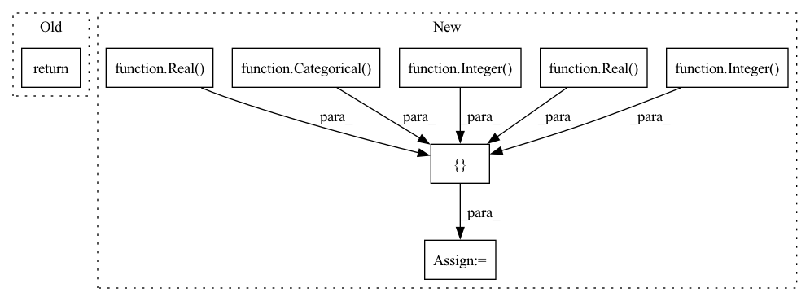

Pattern ID :6191

Before Change
def model_XGBOOSTREGRESSOR(self, **kwargs):
// ////https://xgboost.readthedocs.io/en/latest/python/python_api.html//xgboost.XGBRegressor
return self.model_XGBOOSTRFREGRESSOR(**kwargs)
After Change
def model_XGBOOSTREGRESSOR(self, **kwargs):
// ////https://xgboost.readthedocs.io/en/latest/python/python_api.html//xgboost.XGBRegressor
self.dims = [
Integer(low=5, high=50, name="n_estimators", num_samples=self.num_samples), // Number of gradient boosted trees
Integer(low=3, high=30, name="max_depth", num_samples=self.num_samples), // Maximum tree depth for base learners
Real(low=0.0001, high=0.5, name="learning_rate", num_samples=self.num_samples), //
Categorical(categories=["gbtree", "gblinear", "dart"], name="booster"),
Real(low=0.1, high=0.9, name="gamma", num_samples=self.num_samples), // Minimum loss reduction required to make a further partition on a leaf node of the tree.
Real(low=0.1, high=0.9, name="min_child_weight", num_samples=self.num_samples), // Minimum sum of instance weight(hessian) needed in a child.
Real(low=0.1, high=0.9, name="max_delta_step", num_samples=self.num_samples), // Maximum delta step we allow each tree’s weight estimation to be.
// Real(low=0.1, high=0.9, name="subsample", num_samples=self.num_samples), // Subsample ratio of the training instance.
// Real(low=0.1, high=0.9, name="colsample_bytree", num_samples=self.num_samples),
// Real(low=0.1, high=0.9, name="colsample_bylevel", num_samples=self.num_samples),
In pattern: SUPERPATTERN
Frequency: 5
Non-data size: 8
Instances
Fragment ID: 21171151
Project Name: atrcheema/ai4water
Commit Name: 0ed3c61c81082e7d6983fd9383f49ac7ee4528dd
Time: 2021-02-03
Author: ather_abbas786@yahoo.com
File Name: dl4seq/experiments.py
M Class Name: MLRegressionExperiments
N Class Name: MLRegressionExperiments
M Method Name: model_XGBOOSTREGRESSOR(1)
N Method Name: model_XGBOOSTREGRESSOR(1)
M Parent Class: Experiments
N Parent Class: Experiments
M File Name: dl4seq/experiments.py
N File Name: dl4seq/experiments.py
M Start Line: 769
M End Line: 769
N Start Line: 860
N End Line: 878
'>
Before Change
return
def model_LGBMClassifier(self, **kwargs):
return
def model_DecisionTreeClassifier(self, **kwargs):
return
After Change
def model_LGBMClassifier(self, **kwargs):
//// https://lightgbm.readthedocs.io/en/latest/pythonapi/lightgbm.LGBMClassifier.html
self.dims = [
Categorical(categories=["gbdt", "dart", "goss", "rf"], name="boosting_type"),
Integer(low=10, high=200, name="num_leaves", num_samples=self.num_samples),
Real(low=0.0001, high=0.1, name="learning_rate", num_samples=self.num_samples),
Real(low=10, high=100, name="min_child_samples", num_samples=self.num_samples),
Integer(low=20, high=500, name="n_estimators", num_samples=self.num_samples)
]
self.x0 = ["rf", 10, 0.001, 10, 20]
return {"model": {"LGBMClassifier": kwargs}}
'>
Fragment ID: 21171187
Project Name: atrcheema/ai4water
Commit Name: 0ed3c61c81082e7d6983fd9383f49ac7ee4528dd
Time: 2021-02-03
Author: ather_abbas786@yahoo.com
File Name: dl4seq/experiments.py
M Class Name: MLClassificationExperiments
N Class Name: MLClassificationExperiments
M Method Name: model_LGBMClassifier(1)
N Method Name: model_LGBMClassifier(1)
M Parent Class: Experiments
N Parent Class: Experiments
M File Name: dl4seq/experiments.py
N File Name: dl4seq/experiments.py
M Start Line: 807
M End Line: 807
N Start Line: 1042
N End Line: 1050
'>
Before Change
return
def model_ExtraTreesClassifier(self, **kwargs):
return
def model_LGBMClassifier(self, **kwargs):
return
After Change
def model_ExtraTreesClassifier(self, **kwargs):
//// https://scikit-learn.org/stable/modules/generated/sklearn.ensemble.ExtraTreesClassifier.html?highlight=extratreesclassifier
self.dims = [
Integer(low=5, high=50, name="n_estimators", num_samples=self.num_samples),
Integer(low=3, high=30, name="max_depth", num_samples=self.num_samples),
Real(low=0.1, high=0.5, name="min_samples_split", num_samples=self.num_samples),
Real(low=0.0, high=0.5, name="min_weight_fraction_leaf", num_samples=self.num_samples),
Categorical(categories=["auto", "sqrt", "log2"], name="max_features")
]
self.x0 = [10, 5, 0.4, 0.1, "auto"]
return {"model": {"ExtraTreesClassifier": kwargs}}
'>
Fragment ID: 21171191
Project Name: atrcheema/ai4water
Commit Name: 0ed3c61c81082e7d6983fd9383f49ac7ee4528dd
Time: 2021-02-03
Author: ather_abbas786@yahoo.com
File Name: dl4seq/experiments.py
M Class Name: MLClassificationExperiments
N Class Name: MLClassificationExperiments
M Method Name: model_ExtraTreesClassifier(1)
N Method Name: model_ExtraTreesClassifier(1)
M Parent Class: Experiments
N Parent Class: Experiments
M File Name: dl4seq/experiments.py
N File Name: dl4seq/experiments.py
M Start Line: 804
M End Line: 804
N Start Line: 993
N End Line: 1001
'>
Before Change
def model_RANDOMFORESTREGRESSOR(self, **kwargs):
//// https://scikit-learn.org/stable/modules/generated/sklearn.ensemble.RandomForestRegressor.html
return self.model_EXTRATREEREGRESSOR(**kwargs)
def model_SVR(self, **kwargs):
//// https://scikit-learn.org/stable/modules/generated/sklearn.svm.SVR.html
After Change
def model_RANDOMFORESTREGRESSOR(self, **kwargs):
//// https://scikit-learn.org/stable/modules/generated/sklearn.ensemble.RandomForestRegressor.html
self.dims = [
Integer(low=5, high=50, name="n_estimators", num_samples=self.num_samples),
Integer(low=3, high=30, name="max_depth", num_samples=self.num_samples),
Real(low=0.1, high=0.5, name="min_samples_split", num_samples=self.num_samples),
// Real(low=0.1, high=1.0, name="min_samples_leaf"),
Real(low=0.0, high=0.5, name="min_weight_fraction_leaf", num_samples=self.num_samples),
Categorical(categories=["auto", "sqrt", "log2"], name="max_features")
]
self.x0 = [10, 5, 0.4, // 0.2,
0.1, "auto"]
return {"model": {"RANDOMFORESTREGRESSOR": kwargs}}
'>
Fragment ID: 21171158
Project Name: atrcheema/ai4water
Commit Name: 0ed3c61c81082e7d6983fd9383f49ac7ee4528dd
Time: 2021-02-03
Author: ather_abbas786@yahoo.com
File Name: dl4seq/experiments.py
M Class Name: MLRegressionExperiments
N Class Name: MLRegressionExperiments
M Method Name: model_RANDOMFORESTREGRESSOR(1)
N Method Name: model_RANDOMFORESTREGRESSOR(1)
M Parent Class: Experiments
N Parent Class: Experiments
M File Name: dl4seq/experiments.py
N File Name: dl4seq/experiments.py
M Start Line: 694
M End Line: 694
N Start Line: 755
N End Line: 765
'>
Before Change
return
def model_LabelSpreading(self, **kwargs):
return
def model_(self, **kwargs):
return
After Change
def model_LabelSpreading(self, **kwargs):
//// https://scikit-learn.org/stable/modules/generated/sklearn.semi_supervised.LabelSpreading.html?highlight=labelspreading
self.dims = [
Categorical(categories=["knn", "rbf"], name="kernel", num_samples=self.num_samples),
Integer(low=5, high=10, name="n_neighbors", num_samples=self.num_samples),
Integer(low=10, high=100, name="max_iter", num_samples=self.num_samples),
Real(low=0.1, high=1.0, name="alpha", num_samples=self.num_samples),
Real(low=1e-6, high=1e-2, name="tol", num_samples=self.num_samples),
Integer(low=2, high=50, name="n_jobs", num_samples=self.num_samples)
]
self.x0 = ["knn", 5, 10, 0.1, 1e-4, 5]
return {"model": {"LabelSpreading": kwargs}}
'>
Fragment ID: 21171166
Project Name: atrcheema/ai4water
Commit Name: 0ed3c61c81082e7d6983fd9383f49ac7ee4528dd
Time: 2021-02-03
Author: ather_abbas786@yahoo.com
File Name: dl4seq/experiments.py
M Class Name: MLClassificationExperiments
N Class Name: MLClassificationExperiments
M Method Name: model_LabelSpreading(1)
N Method Name: model_LabelSpreading(1)
M Parent Class: Experiments
N Parent Class: Experiments
M File Name: dl4seq/experiments.py
N File Name: dl4seq/experiments.py
M Start Line: 795
M End Line: 795
N Start Line: 1029
N End Line: 1038